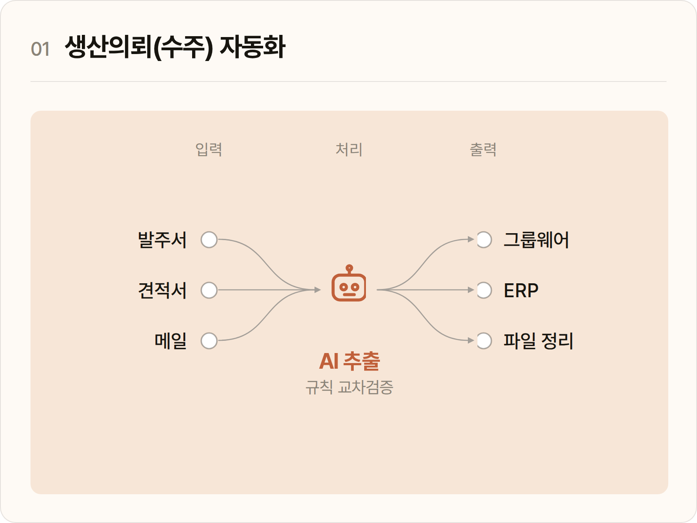
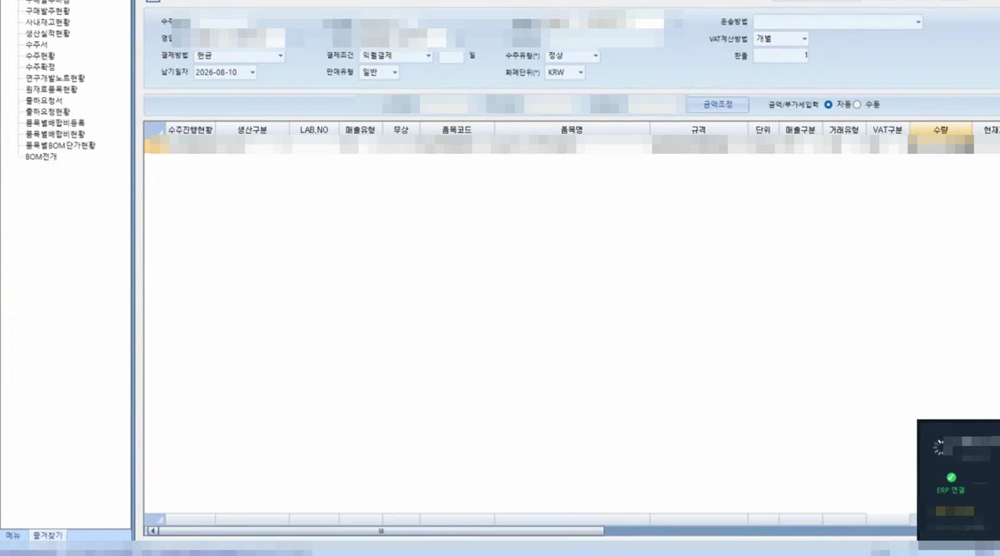
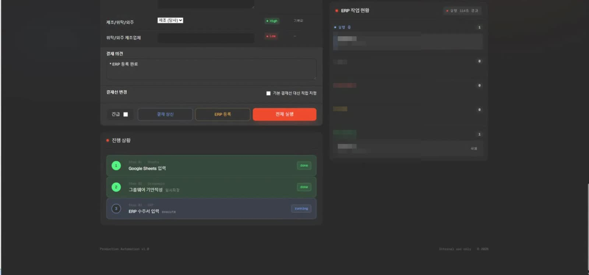

그룹웨어와 ERP에 같은 내용을 두 번 입력하던 수주 처리를 파일 업로드 한 번으로 끝냅니다.

수주가 들어오면 그룹웨어 생산의뢰서와 ERP 수주서에 같은 내용을 두 번 입력하고 메일 속 특이사항을 여러 항목으로 나눠 옮겨 적어야 했습니다.
메일·발주서·견적서를 올리면 AI가 필요한 값을 읽어내고 그룹웨어 기안과 ERP 입력까지 자동으로 처리합니다. 입력한 값을 다시 읽어 확인해 오류를 없앴습니다.
환각은 완전히 없앨 수 없고 실제로 추출 단계에서도 사라지지 않았기에 AI에는 추출까지만 맡기고 검증은 규칙으로 처리했습니다. ERP에 넣은 값을 다시 읽어 대조하고 마지막 확인을 사람이 하는 편이 완전 자동화보다 실수가 적다고 판단했습니다.
제품생산의뢰 한 건마다 그룹웨어 [제품생산의뢰서] 결재 상신과 ERP [수주서]를 함께 작성해야 했습니다.
그룹웨어 [제품생산의뢰서] 결재 상신과 ERP [수주서]를 매 건 함께 작성
메일 특이사항을 전체·원료·자재 특이사항과 결재의견에 일일이 나눠 기재
양식 복사·붙여넣기, 결재선 지정, 긴급 건은 제목에 [긴급] 추가 후 상신 시 긴급 체크
건당 8~10분 × 하루 다수. 수량·납기 오기, 특이사항 누락 같은 실수가 빈번
FastAPI 서버가 작업을 큐에 적재하고 워커가 그룹웨어 기안·ERP 입력·파일 정리를
병렬로 동시에 처리합니다.
REST API로 작업을 받아 큐에 적재하고 워커에 분배합니다.
독립 큐 · 포커스 락 · 즉시 retry. 세 작업이 동시에 돌되 화면 포커스 충돌만 락으로 막습니다.
작업 스케줄러가 1분마다 감시하고 배치 무한 루프가 받쳐, 창을 닫거나 Ctrl+C로 죽여도 자동 재시작됩니다.
대부분을 AI 보조로 빠르게 구현했기에 실제로 공을 들인 곳은 자동화가 조용히 틀리지 않게 만드는 판단이었습니다.
에러 없음은 성공이 아닙니다. ERP 입력은 readback, AI 추출은 정규식으로 매번 재확인합니다.
같은 제형 라벨도 어느 표에 속하냐로 판별합니다.
사후 필터가 아니라 소스 단계에서 차단합니다.
환각과 오독을 전제로 설계했습니다. AI는 추출 도구이고 최종 판단은 규칙 기반 로직이 합니다.
관리자 권한 로컬 서버를 localhost니까 안전으로 두지 않고 다층으로 방어했습니다.
추출 결과 확인 단계를 의도적으로 남겨 오류 폭주를 막았습니다. 완전 자동화를 욕심내지 않았습니다.
즉시 retry, ESC 세 번 긴급 중지, 포커스 락으로 충돌과 실패 상황까지 대비했습니다.
파일에서 핵심 데이터를 뽑고 관련 메일을 직접 찾아 특이사항 단서까지 모읍니다.
추출은 AI가, 검증은 규칙이 합니다.
업체명·제품명·수량·단가·납기일을 구조화해 뽑습니다. 텍스트를 먼저 읽고 글자가 분리되면 Vision OCR로 넘어가는 이중 추출을 씁니다. 수율을 반영해 생산요청수량을 자동 계산하고 제품명은 ERP 정식 품목명칭으로 자동 교체합니다.
그룹웨어 제품생산의뢰 메일함을 스크래핑해 해당 건의 메일을 자동으로 찾습니다. 제품명 부분·순서 매칭으로 내부 명칭 차이도 흡수하고, 답장·전달 체인에서는 최상단 발신자 본문만 분석합니다.
텍스트와 Vision 이중 추출 결과를 비교하고, 정규식 패턴으로 교차검증하고, 포장규격 기반 추론과 대조하고, mm 치수 같은 생성값은 제거합니다.
AI는 추출이고 최종 검증은 규칙이 담당합니다.
메일 본문의 특이사항을 의미별로 나눠 생산의뢰서의 각 칸과 결재의견, ERP 비고까지 자동으로 채웁니다.
생산·납품·포장·보관·품질 관련 모든 요청. 원료·자재 내용도 중복해 기재합니다.
성분·배합·함량·공급처, 사급과 자사구매 구분, 원료 소진만 분리합니다.
포장재·라벨·박스·파우치·캡슐쉘 같은 부자재만 분리합니다.
모든 특이사항을 종합해 자동으로 기재합니다.
메일에 긴급 키워드가 있으면 긴급 건으로 보고 결재 제목에 [긴급]을 붙이고 상신할 때 긴급 옵션을 체크합니다.
원료 600kg 소진(6,666세트) 같은 표현을 인식해 발주수량과 생산요청수량을 6,666으로 자동 계산합니다.
원료·자재 특이사항을 50자 이내로 줄이되 원료코드·중량·사급 여부·소진 여부는 보존합니다.
제형은 거래처마다 표기가 다르고 자재 정보와 섞여 오추출되기 쉬워 전용 정규화·검증 로직을 두었습니다.
원가표·제품사양·부자재 표에 모두 제형 라벨이 있었습니다. 부자재 표의 값은 액상스틱(32mm) 같은 자재 치수인데 키-값 스캐너가 이를 제품 제형으로 잘못 집어왔습니다.
자재표에만 있는 컬럼(CUT(cm)·1롤폭(mm))으로 부자재 행을 식별해 후보에서 아예 빼버렸습니다. 같은 라벨도 맥락이 다르면 다른 데이터입니다.
제품생산의뢰서 기안 작성부터 결재선 지정과 상신까지, 브라우저 SPA를 사람처럼 조작합니다.
결재상신 버튼은 클릭을 처리하는 코드가 겉으로 드러나 있지 않고 함수 안에 숨은 변수(클로저)에 묶여 있어, 자동화 도구로 어떤 방식의 클릭을 보내도 반응하지 않았습니다.
버튼에 연결된 코드를 꺼내($._data) 분석한 뒤, 그 코드가 실제로 부르는 함수(validate → draftProc)를 브라우저 안에서 직접 실행해 우회했습니다.
API도 DB 접근도 없는 .NET WinForms ERP를 사람처럼 GUI를 조작해 자동 입력합니다.
드롭다운은 유효하지 않은 값을 넣어도 에러 없이 조용히 무시합니다. API라면 4xx·5xx로 알 수 있지만 GUI에서는 알 수 없습니다.
모든 입력 후 값을 다시 읽어와 실제 반영을 검증하고 실패하면 저장 전에 자동으로 재시도합니다. 유효값은 실제로 넣어보는 테스트로만 확정했습니다.

자동화가 사람만큼 알아서 하려면 주변 데이터와 파일까지 자동으로 맞춰져야 합니다.
발주서·견적서·메일에서 뽑은 제품명과 업체명을 네 개의 매칭 엔진이 사내 마스터와 대조해
코드·담당자로 확정하고, 한 결과를 Sheets·ERP·기안 세 곳에 재사용합니다.
정확일치 1.0, 포함 0.7~0.9, 그 밖은 퍼지매칭 후 규격·채널·거래처로 보정해 최고점(0.7 이상)을 채택합니다. 담당자는 업체 0.7 이상에 제품 0.5 이상, 거래처코드는 0.9 이상으로 엄격하게 봅니다. 같은 이름이 여러 채널(전유통·대리점)로 나뉘면 메일에 포함된 키워드를 감지해 구분합니다.
사람은 추출 결과만 확인·수정하고 실행 버튼을 누릅니다. 큐에서 진행 상태를 실시간으로 봅니다.

공식 API도 DB 접근도 없는 두 시스템이었습니다. 그룹웨어는 브라우저(Playwright)로, ERP는 엑셀 같은 표 입력칸(fpSpread)을 복사·붙여넣기로 간접 제어했습니다. 드롭다운은 틀린 값도 조용히 무시돼서 넣은 뒤 다시 읽어 반영을 확인했습니다.
클릭 코드가 함수 안 숨은 변수(클로저)에 의존해 일반 클릭이 전부 실패했습니다. 버튼에 연결된 코드를 꺼내 분석하고 실제 함수를 브라우저 안에서 직접 실행했습니다.
거래처마다 양식이 다르고 PDF 텍스트가 깨졌습니다.
텍스트를 먼저 읽고 깨지면 이미지 인식으로 대신 처리하는 이중 전략을 쓰고
결과는 정규식으로 재검증했습니다.
제품 제형과 부자재 치수가 같은 라벨로 섞여 있었습니다.
자재표 고유 컬럼으로 식별해 소스 단계에서 제외했습니다.
각 방어를 무슨 공격을 막는지 기준으로 설계했습니다.
서버가 내 PC 안에서만 동작합니다. 바깥에서는 접속 자체가 안 됩니다.
악성 웹사이트가 내 브라우저를 시켜 로컬 서버를 치는 것을 차단합니다.
다른 탭이나 확장이 내 자동화를 몰래 실행하지 못하게 이중으로 잠급니다.
엔드포인트 목록 문서를 꺼서 공격자에게 지도를 주지 않습니다.
../evil.exe 같은 경로 조작으로 폴더를 빠져나가는 것을 차단합니다.
확장자(.pdf·.xlsx·이미지)와 크기(25MB)만 허용합니다.
저장 경로가 업로드 폴더 안인지 한 번 더 검증하는 이중 안전장치입니다.
API 키는 .env에만 두고 코드와 깃에는 포함하지 않습니다.
같은 자동화라도 더 빠르고 안정적으로 - 병렬화, 세션 재사용, 사전 동기화, 빠른 경로 우선.
그룹웨어(브라우저)와 ERP(데스크탑)를 독립 큐로 동시 처리하고 포커스 충돌만 락으로 제어했습니다. 순차 처리보다 처리량이 늘면서 입력 안정성은 유지됩니다.
브라우저 로그인 상태를 저장·유지해 1회 로그인 후 계속 재사용합니다.
매 건 반복 로그인이 사라졌습니다.
ERP 제품목록을 매일 08:25에 미리 내보내 캐시합니다.
매 건 ERP를 조회하지 않고 즉시 품목을 매칭합니다.
텍스트 읽기를 먼저 하고 깨질 때만 이미지 인식으로 전환합니다.
실패한 작업의 재시도는 대기열 최우선으로 즉시 실행합니다.
화면 자동화의 적은 조용한 실패입니다. 입력이 무시돼도 에러가 안 납니다. 모든 입력을 다시 읽어 확인하도록 의무화했습니다.
유효값은 실제로 넣어보고 다시 읽어 확인하는 테스트로만 확정했습니다.
AI는 추출을 하고 검증은 규칙이 합니다.
포커스·타이밍·팝업·검증을 체계적으로 설계하면 됩니다.
ERP와 그룹웨어에 API가 없어 Playwright와 GUI 자동화로 풀었습니다. 추후 사내 API가 열리면 GUI 조작을 API 호출로 교체해 더 빠르고 안정적으로 만들 여지가 큽니다.